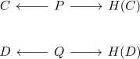
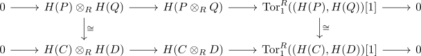
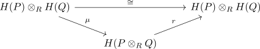

split of the kunneth formula
Proposition
The algebraic kunneth formula splits
Proof
By quasi isomorphism for a chain complex over a hereditary ring there are degreewise projective chain complexes $P,Q$ and quasi-isomorphisms

By algebraic kunneth there exists a commutative diagram

where the isomorphism are given after applying homology and the tensoring functor resp. the Tor Functor
By the Five-Lemma the middle is also an isomorphism
Therefore it suffices to show, that upper sequence splits
Since the maps
\begin{align*}
P \rightarrow H(C) \cong H(P) \cong H(H(P)) \\
Q \rightarrow H(D) \cong H(Q) \cong H(H(Q))
\end{align*}
induces $P \otimes_R Q \rightarrow H(P) \otimes_R H(Q)$
And this induces a map
\begin{align*}
H(P \otimes_R Q) \rightarrow H(H(P) \otimes_R H(Q)) \cong H(P) \otimes_R H(Q)
\end{align*}
see:
- zero boundary complex
- homology of a trivial boundary complex
- tensor product preserves zero bonudary complex

where $\mu$ is the map out of the tensor of homology to the homology of the tensor
Here
\begin{align*}
r\mu([x] \otimes [y]) =& r [x \otimes y] \\
=& H(\alpha' \otimes \beta')([x \otimes y]) \\
=& H(\alpha'(x) \otimes \beta'(y)] \\
=& H(\alpha')[x] \otimes H(\beta')[y]
\end{align*}
Thus we are done by the Splitting Lemma